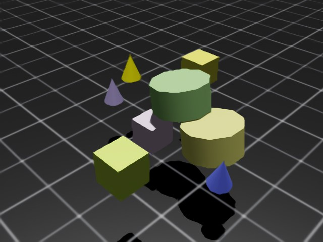
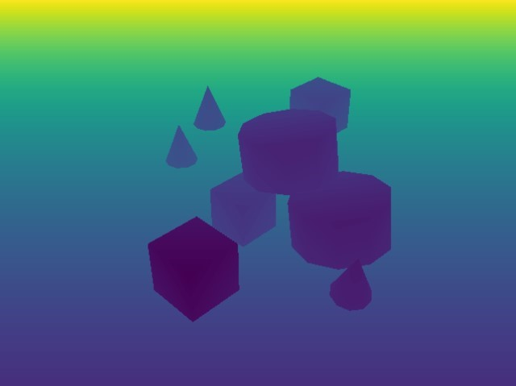
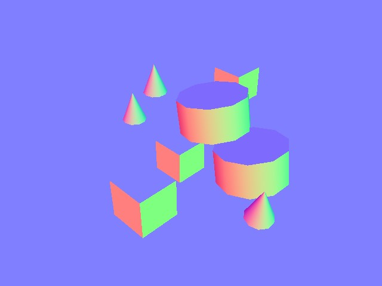
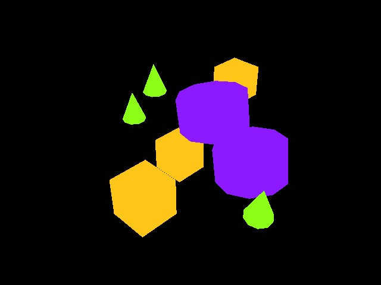
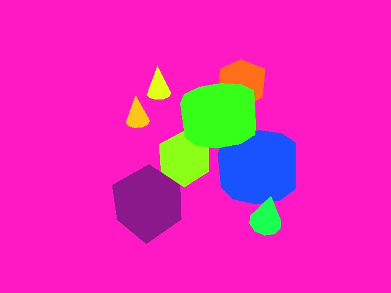
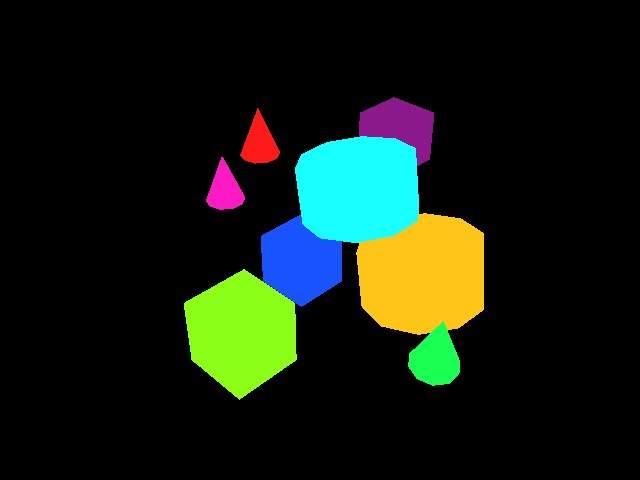

Camera#
Camera sensors in Isaac Lab are renderer-backed sensors: each TiledCamera instance
is coupled to a renderer that produces the image data. The renderer and camera are intentionally
isolated from each other — the camera defines what to capture (pose, resolution, field of view,
data types), while the renderer defines how to render it (RTX ray-tracing, Newton Warp rasterizer,
etc.). This separation allows the same camera configuration to run across different physics and
rendering backends without code changes.
For an overview of the available renderer backends and how to choose between them, see Renderers.
Rendered images are unique among supported sensor data types due to their large bandwidth requirements. A single 800 × 600 image with 32-bit color clocks in at just under 2 MB. At 60 fps across thousands of parallel environments, this grows quickly. Isaac Lab’s tiled rendering API specifically addresses these scaling challenges by batching all cameras into a single render pass.
Renderer Backends#
The renderer used by a camera is configured via the renderer_cfg field on
TiledCameraCfg. The default is IsaacRtxRendererCfg
(NVIDIA RTX, requires Isaac Sim).
|
Requires Isaac Sim? |
Supported data types |
|---|---|---|
|
Yes |
rgb, rgba, depth, normals, motion vectors, semantic/instance segmentation, and all other annotators |
|
No (kit-less) |
|
|
No (+ |
|
Note
The Newton Warp renderer currently supports only ``rgb`` and ``depth`` data types.
Annotators such as segmentation, normals, and motion vectors are Isaac RTX-specific features and
require IsaacRtxRendererCfg.
Tiled Rendering#
Note
This feature is available from Isaac Sim version 4.2.0 onwards (for the RTX renderer). The Newton Warp renderer supports tiled rendering in kit-less mode.
Tiled rendering in combination with image processing networks require heavy memory resources, especially at larger resolutions. We recommend running 512 cameras on RTX 4090 GPUs or similar when using the RTX renderer.
The Tiled Rendering API provides a vectorized interface for collecting image data from all environment clones in a single batched render pass. Instead of one render call per camera, all copies of a camera are composited into a single large tiled image, dramatically reducing host-device transfer overhead.
Isaac Lab provides tiled rendering through TiledCamera, configured via
TiledCameraCfg. The renderer_cfg field selects the rendering backend.
TiledCameraCfg with renderer_cfg#
The renderer is specified via renderer_cfg on TiledCameraCfg. The camera and
renderer configurations are fully decoupled: you can swap renderers without changing any other camera
parameters.
Default (RTX, requires Isaac Sim):
from isaaclab.sensors import TiledCameraCfg
import isaaclab.sim as sim_utils
# IsaacRtxRendererCfg is the default, no explicit import needed
tiled_camera: TiledCameraCfg = TiledCameraCfg(
prim_path="/World/envs/env_.*/Camera",
offset=TiledCameraCfg.OffsetCfg(pos=(-7.0, 0.0, 3.0), rot=(0.9945, 0.0, 0.1045, 0.0), convention="world"),
data_types=["rgb"],
spawn=sim_utils.PinholeCameraCfg(
focal_length=24.0, focus_distance=400.0, horizontal_aperture=20.955, clipping_range=(0.1, 20.0)
),
width=80,
height=80,
# renderer_cfg defaults to IsaacRtxRendererCfg()
)
Newton Warp renderer (kit-less, no Isaac Sim required):
from isaaclab.sensors import TiledCameraCfg
from isaaclab_newton.renderers import NewtonWarpRendererCfg
import isaaclab.sim as sim_utils
tiled_camera: TiledCameraCfg = TiledCameraCfg(
prim_path="/World/envs/env_.*/Camera",
offset=TiledCameraCfg.OffsetCfg(pos=(-7.0, 0.0, 3.0), rot=(0.9945, 0.0, 0.1045, 0.0), convention="world"),
data_types=["rgb", "depth"], # only rgb and depth supported with Newton renderer
spawn=sim_utils.PinholeCameraCfg(
focal_length=24.0, focus_distance=400.0, horizontal_aperture=20.955, clipping_range=(0.1, 20.0)
),
width=80,
height=80,
renderer_cfg=NewtonWarpRendererCfg(),
)
Multi-backend preset (switches renderer alongside physics backend):
For environments that need to support both backends, use
MultiBackendRendererCfg together with the
PresetCfg pattern:
from isaaclab.sensors import TiledCameraCfg
from isaaclab_tasks.utils.presets import MultiBackendRendererCfg
import isaaclab.sim as sim_utils
tiled_camera: TiledCameraCfg = TiledCameraCfg(
prim_path="/World/envs/env_.*/Camera",
offset=TiledCameraCfg.OffsetCfg(pos=(-7.0, 0.0, 3.0), rot=(0.9945, 0.0, 0.1045, 0.0), convention="world"),
data_types=["rgb"],
spawn=sim_utils.PinholeCameraCfg(
focal_length=24.0, focus_distance=400.0, horizontal_aperture=20.955, clipping_range=(0.1, 20.0)
),
width=80,
height=80,
renderer_cfg=MultiBackendRendererCfg(), # selects RTX or Newton Warp via presets= CLI arg
)
The active preset is selected at launch via the presets= CLI argument:
# Use Newton Warp renderer
python train.py task=Isaac-Cartpole-RGB-Camera-Direct-v0 presets=newton_renderer
# Use OVRTX renderer
python train.py task=Isaac-Cartpole-RGB-Camera-Direct-v0 presets=ovrtx_renderer
# Use default (Isaac RTX)
python train.py task=Isaac-Cartpole-RGB-Camera-Direct-v0
Accessing camera data#
tiled_camera = TiledCamera(cfg.tiled_camera)
data = tiled_camera.data.output["rgb"] # shape: (num_cameras, H, W, 3), torch.uint8
The returned data has shape (num_cameras, height, width, num_channels), ready to use directly
as an observation in RL training.
When using the RTX renderer, add --enable_cameras when launching:
python scripts/reinforcement_learning/rl_games/train.py \
--task=Isaac-Cartpole-RGB-Camera-Direct-v0 --headless --enable_cameras
Annotators (RTX only)#
Note
Annotators are a feature of the Isaac RTX renderer (IsaacRtxRendererCfg).
They are not available with the Newton Warp renderer or ovrtx, which
support only rgb and depth.
TiledCamera exposes the following annotator
data types when using the RTX renderer:
"rgb": A 3-channel rendered color image."rgba": A 4-channel rendered color image with alpha channel."distance_to_camera": Distance to the camera optical center per pixel."distance_to_image_plane": Distance along the camera’s Z-axis per pixel."depth": Alias for"distance_to_image_plane"."normals": Local surface normal vectors at each pixel."motion_vectors": Per-pixel motion vectors in image space."semantic_segmentation": Semantic segmentation labels."instance_segmentation_fast": Instance segmentation data."instance_id_segmentation_fast": Instance ID segmentation data.
RGB and RGBA#

rgb returns a 3-channel RGB image of type torch.uint8, shape (B, H, W, 3).
rgba returns a 4-channel RGBA image of type torch.uint8, shape (B, H, W, 4).
To convert to torch.float32, divide by 255.0.
Depth and Distances#

distance_to_camera returns a single-channel depth image with distance to the camera optical
center, shape (B, H, W, 1), type torch.float32.
distance_to_image_plane returns distances of 3D points from the camera plane along the Z-axis,
shape (B, H, W, 1), type torch.float32.
depth is an alias for distance_to_image_plane.
Normals#

normals returns local surface normal vectors at each pixel, shape (B, H, W, 3) containing
(x, y, z), type torch.float32.
Motion Vectors#
motion_vectors returns per-pixel motion vectors in image space between frames.
Shape (B, H, W, 2): x is horizontal motion (positive = left), y is vertical motion
(positive = up). Type torch.float32.
Semantic Segmentation#

semantic_segmentation outputs per-pixel semantic labels for entities with semantic annotations.
An info dictionary is available via tiled_camera.data.info['semantic_segmentation'].
If
colorize_semantic_segmentation=True: 4-channel RGBA image, shape(B, H, W, 4), typetorch.uint8. TheidToLabelsdict maps color to semantic label.If
colorize_semantic_segmentation=False: shape(B, H, W, 1), typetorch.int32, containing semantic IDs. TheidToLabelsdict maps ID to label.
Instance ID Segmentation#

instance_id_segmentation_fast outputs per-pixel instance IDs, unique per USD prim path.
An info dictionary is available via tiled_camera.data.info['instance_id_segmentation_fast'].
If
colorize_instance_id_segmentation=True: shape(B, H, W, 4), typetorch.uint8. TheidToLabelsdict maps color to USD prim path.If
colorize_instance_id_segmentation=False: shape(B, H, W, 1), typetorch.int32. TheidToLabelsdict maps instance ID to USD prim path.
Instance Segmentation#

instance_segmentation_fast outputs instance segmentation, traversing down the prim hierarchy
to the lowest level with semantic labels (unlike instance_id_segmentation_fast, which always
goes to the leaf prim).
An info dictionary is available via tiled_camera.data.info['instance_segmentation_fast'].
If
colorize_instance_segmentation=True: shape(B, H, W, 4), typetorch.uint8.If
colorize_instance_segmentation=False: shape(B, H, W, 1), typetorch.int32.
The idToLabels dict maps color to USD prim path. The idToSemantics dict maps color to
semantic label.